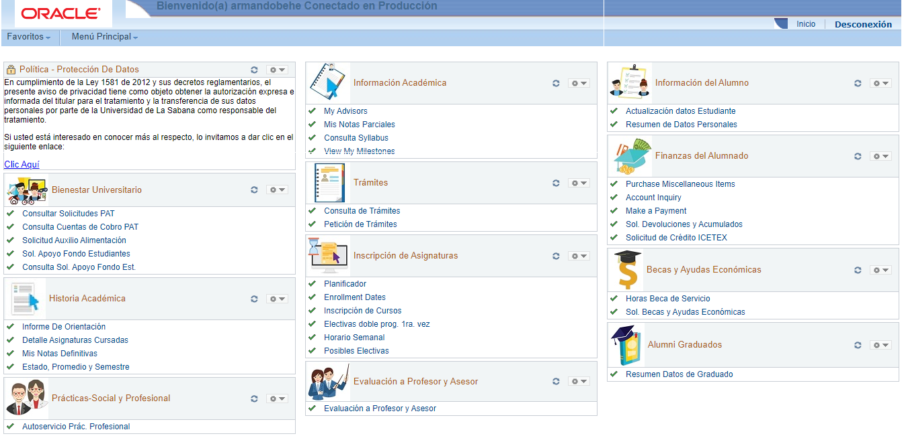
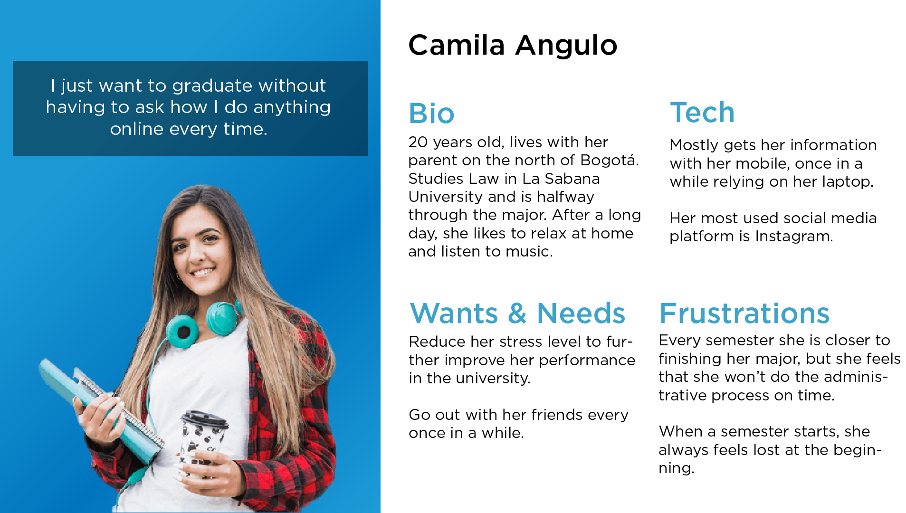
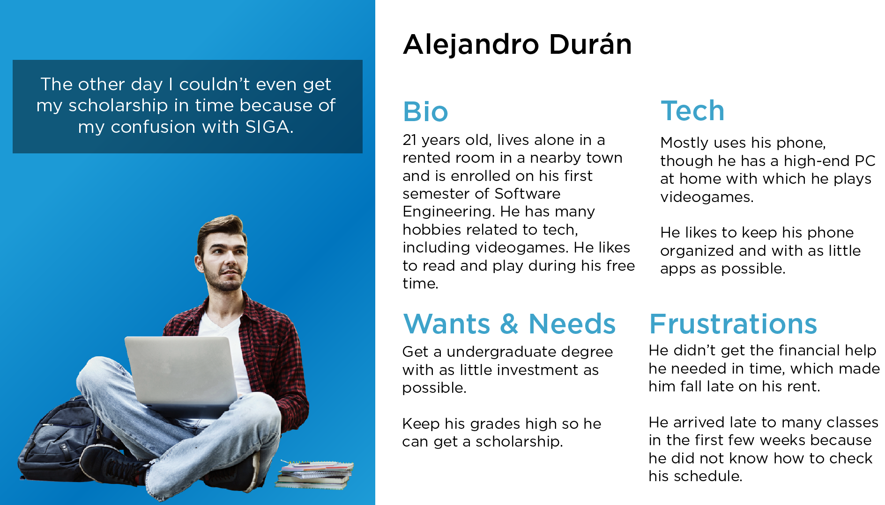
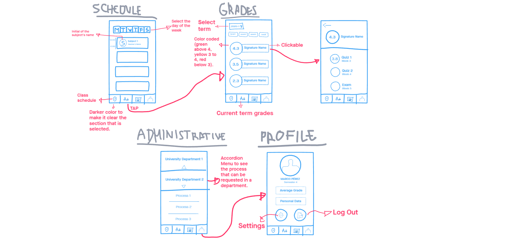

SIGA is the all-in-one website used in La Sabana University to view grades, class schedule, and request administrative processes from the different departments. The following is an independent case study.
The colombian university of La Sabana has made a big effort to push for digitalization of many of the everyday things done by students inside the campus. Around this need for digital applications, SIGA was created. However, SIGA is a big website, with more than 30 choices on the homepage alone, giving way to confusion and, especially, delayed processes inside the administration and overall disorientation of new and old students alike.
Research
There are three problems with this interface.
- Only in the homepage, we have a total 33 options to choose, sometimes with unclear names like "View my Milestones" or "Graduate Data Summary.
- It's not mobile-friendly or responsive, which is not convenient taking into context that students would use this system on a daily basis, which naturally involves a mainly mobile usage.
- Confusion and nested options make it difficult to find the correct section, giving way to mistakes in a system that is essential to certificates, official letters and many other administrative matters inside the university.
User
Interviewing many students inside the university, most of them agreed that the interface was confusing and cluttered, making it a challenge just to check your grades.
- One student said that he missed a scholarship process entirely just because he could not find the right place inside SIGA, something that was coupled with the inability of the institution's staff to answer his questions.
- A teacher smiled uncomfortably and said, "I just think it's trying to be too many things at once".
- A new student laughed and said how hard it was to find his classroom just in the first, what's with all the codes and abbreviations that made everything more difficult.
Insights
- Currently, the interface is cluttered with too much information.
- The reliance on codes and abbreviations, while effective from a backend perspective, is confusing to the user.
- The maze inside the app is confusing to the staff as well, many times not being able to answer basic questions about its usage.
So, who is this user?
 Design Solution
- First of all, if we want to make this a system that can be used on a daily basis, we need to make it mobile-friendly, preferably an app for phones, not a website.
- Second, the plethora of choices showed in the present can be trimmed down to four tabs: schedule, grades, administrative and profile. Inside these tabs would be a simplified presentation of the information, in a easy-to-follow manner, backed up by standard design in a phone and strategically placed icons and color. The objective is to be able to use the app without any tutorials or video explanations, which is the current solution inside the university.
- Third, priorities inside the app need to be reshuffled. The enrollment process is stressful, unreliable, and leaves 35% of the students from the university without a proper schedule for the semester. For now, since this app is conceptualized as a daily use app, this entire process needs to be left out, giving priorities to every-day activities like checking your schedule or your grades.
Wireframes
User Testing
The users all agreed that such an app would a massive improvement compared to the current system. Furthermore, the fact that it could be used daily "just like Instagram, Facebook..." (like one student said) is viewed as a contributing factor to quality of life.
However, an insight by the users involved the offline experience: sometimes teachers arrived late and they were not notified, there was an upcoming evaluation and did not take it into account, or having the email from a teacher is hard to get. All this involves offline inconveniences that can be solved inside the digital context. So, this insight can be taken into account for a future iteration, as new features are added.
Final Product
Lessons Learned
Users are very aware about how the digital apps can solve offline problems. User experience is not only digital or online solutions, it also includes how the outside world works, how the user's journey is developed and perceived. Taking advantage of this, while this case study focuses on redesign, future features can be developed by emphatizing on the offline problems of a user, bringing forth digital solutions.